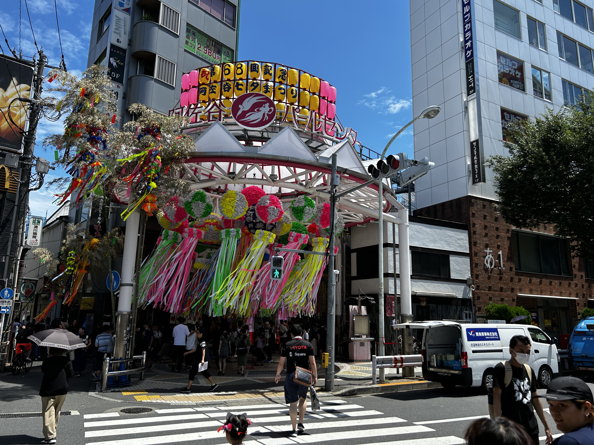

家から新宿駅まで最速20分以内でお出かけ！
| 新宿駅 | 19分 (平日 中央線快速利用時) |
|---|---|
| 東京駅 | 33分 (平日 中央線快速利用時) |
| 霞ヶ関駅 | 36分 (丸ノ内線利用時) |
| 市ヶ谷駅 | 32分 (中央線各駅停車利用時) |
| 吉祥寺駅 | 16分 (中央線利用時) |
※ 外観はイメージです
家から新宿駅まで最速20分以内でお出かけ！
| 新宿駅 | 19分 (平日 中央線快速利用時) |
|---|---|
| 東京駅 | 33分 (平日 中央線快速利用時) |
| 霞ヶ関駅 | 36分 (丸ノ内線利用時) |
| 市ヶ谷駅 | 32分 (中央線各駅停車利用時) |
| 吉祥寺駅 | 16分 (中央線利用時) |
阿佐ヶ谷駅から徒歩7分
阿佐ヶ谷の七夕祭り
保育園・幼稚園・小学校・ボール遊びができる公園が徒歩5分圏内

洗剤を入れてスイッチを押すだけで浴槽をキレイに！

リビングを見渡しやすいペニンシュラキッチン！
1ヶ月で約26時間分の家事を削減！ 約32,000円分の時間価値！
※ 31日間毎日 浴槽掃除5分/食器洗い15分3回行った場合
リビング: TV・チューナー・ゲーム機を有線LAN接続可能

ダイニング: 炊飯器・IH調理器等、自由自在に

イオン発生器で空気をキレイに

ペットスペース（ロボット掃除機設置も可）

コート掛け・ニッチ

夜中も眩しくありません
住所: 東京都杉並区阿佐谷南1-26-1 GoogleMap

鍵を差して右に回して解錠

鍵を差して左に回して解錠

玄関靴棚上部にあり
届かない場合は、備え付けの脚立をご利用ください

階段登って右手前の脱衣所
窓のロックは、中央の鍵と下部の窓ストッパーの二重ロックになっています

外に出られる窓にはシャッターがついています


現状復帰にご協力をお願いいたします